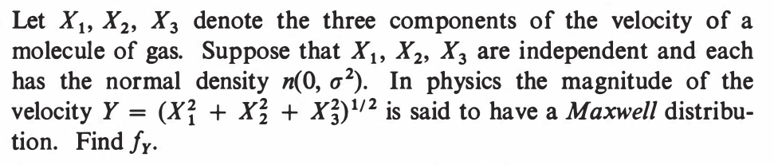
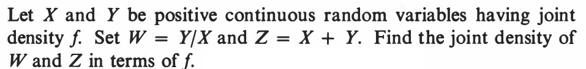

EXAMPLE 1: If $X$ is uniformaly distributed over $[0,2],$ then find a density for $X^2.$
SOLUTION: Let $Y = X^2.$ A density for $X$ is $f(x) = \frac 12$ if $0\leq x\leq 2$ (and 0 else). We shall pass to the CDF of $X:$ $$F(x) = \left\{\begin{array}{ll}0&\text{if }x < 0\\ \frac x2&\text{if }0\leq x < 2\\ 1&\text{otherwise.}\end{array}\right. $$ From this we shall compute the CDF of $Y.$ Clearly, $Y$ cannot take values outside $[0,4].$ So $G(y) = 0$ if $y<0$ and $G(y) = 1$ if $y\geq 2.$ Let $y\in[0,2).$ Then $$G(y) = P(Y\leq y) = P(X^2\leq y) = P(X\leq \sqrt y) = \frac 12\sqrt y.$$ Differentiating this, we arrive at the required density of $Y$ as $$g(y) = G'(y) = \left\{\begin{array}{ll}\frac{1}{4y}&\text{if }y\in[0,2]\\ 0&\text{otherwise.}\end{array}\right.$$ ■ You see the advantage of monotonicity. Even though $x\mapsto x^2$ is a not a monotone function over ${\mathbb R},$ it is so when restricted to $[0,2].$ The CDF technique can handle even some simple non-monotonic cases, as we show now.EXAMPLE 2: Let $X$ be uniform over $[-1,1].$ Find the density of $X^2.$
SOLUTION: Clearly, $Y=X^2$ cannot go outside $[0,1].$ So its CDF $G(y)$ must have $G(y)=0$ for $y<0$ and $G(y)=1$ for $y\geq 1.$ For $y\in[0,1)$ we have $$G(y) = P(X^2\leq y) = P(-\sqrt y \leq X \leq \sqrt y) = \sqrt y.$$ Differentiating we get the density $$g(y) = \left\{\begin{array}{ll}\frac{1}{2\sqrt y}&\text{if }y\in[0,1]\\ 0&\text{otherwise.}\end{array}\right. $$ ■EXERCISE 1: Use a similar argument to find a density for $\x 1$, the minimum.
There is a particularly simple formula for the joint density of $(\x 1,...,\x n)$ if we know the joint density of $(X_1,...,X_n).$ Before giving the general form, let us warn up with a simple example.EXAMPLE 3: Let $(X_1,X_2)$ have joint density $f(x_1,x_2).$ Then find the joint density of $(\x 1, \x 2).$
SOLUTION: We shall first compute the joint CDF of $(\x 1, \x 2).$ Let us find $G(3,2) = P(\x 1\leq 3,\x 2\leq 2) = P(\x 2\leq 2),$ since $\{\x _1\leq 3,\, \x 2\leq 2\} = \{\x 2\leq 2\}. $ More generally, if $x > y,$ then $G(x,y)$ is going to be free of $x.$ Remember that our final goal is to find the joint density of $(\x 1, \x 2)$, and for that we are going to differentiate partially w.r.t. both the arguments. So if $G(x,y)$ does not depend on either $x$ or $y$ then the density will be zero. So if $x > y,$ we have $g(x,y)=0.$ Now let us explore $G(2,3) = P(\x 1\leq 2,\, \x 2\leq 3).$ By the inclusion-exclusion principle, this is $P(X_1\leq 2,\, X_2\leq 3)+P(X_1\leq 3,\, X_2\leq 2)-P(X_1\leq 2,\, X_2\leq 2)=F(2,3)+F(3,2)+F(2,2).$ In general, for $x < y$ we have $G(x,y) = F(x,y)+F(y,x)-F(x,x).$ The last term will be killed when we differentiate wrt $y.$ The first two terms will produce $f(x,y)+f(y,x).$ So the required joint density of $(\x 1, \x 2)$ will be $f(u,v),$ where $$f(u,v)=\left\{\begin{array}{ll}f(u,v)+f(v,u)&\text{if }u < v\\ 0&\text{otherwise.}\end{array}\right.$$ ■ Once you notice that only the first inclusion terms will survive the differentiations, you can easily generalise to any finite number of variables. This produces the following theorem.Proof: The proof is exactly as for the bivariate case. The only point that is slightly non-trivial is the inclusion-exclusion, and the vanishing of all but the first inclusion terms upon differentiation.
To see this notice that their are $n!$ inclusion terms in the first step. A typical of these terms is like $P(A_\pi),$ where $$A_\pi = \{X_1\leq u_{\pi(1)},...,X_n\leq u_{\pi(n)}\},$$ where $\pi$ is some permutation of $\{1,...,n\}.$ If we take some other permutation $\xi$ we get $A_\xi.$ Then the intesection is $$A_\pi\cap A_\xi = \{\forall i~~X_i\leq \min\{u_{\pi(i)},u_{\xi(i)}\}\}.$$ This is bound to be free of at least one $u_i.$[Because...][QED] In the IID case we have the following special case:Since $\pi\neq\xi,$ hence $\pi(i)\neq \xi(i)$ for some $i.$ Let $\pi(i) = a$ and $\xi(i) =b.$ Then it involves only the smaller of $u_a$ and $u_b.$
Proof: It follows immediately from the above theorem on noticing that the joint density of $(X_1,...,X_n)$ is $f(x_1)\cdots f(x_n).$ [QED]
EXERCISE 2: [hpstrans1.png]
EXERCISE 3: [hpstrans2.png]
EXERCISE 4: [hpstrans3.png]
EXERCISE 5: [hpstrans4.png]
EXERCISE 6: [hpstrans5.png]
EXERCISE 7: [hpstrans6.png]
EXERCISE 8: [hpstrans7.png]
EXERCISE 9: [hpstrans8.png]
::EXERCISE 10: [hpstrans9.png]
::
EXERCISE 11: [hpstrans10.png]
EXERCISE 12: [hpstrans11.png]
EXERCISE 13: [hpstrans12.png]
::
EXERCISE 14: [hpstrans13.png]
EXERCISE 15: [hpstrans14.png]
EXERCISE 16: [hpstrans15.png]
EXERCISE 17: [hpstrans16.png]
::EXERCISE 18: [hpstrans17.png]
::
EXERCISE 19: [hpstrans18.png]
EXERCISE 20: [hpstrans19.png]
EXERCISE 21: [hpstrans20.png]
EXERCISE 22: [hpstrans21.png]
::EXERCISE 23: [hpstrans22.png]
::
EXERCISE 24: [hpstrans23.png]
EXERCISE 25: [hpstrans24.png]
::
EXERCISE 26: [hpstrans25.png]
EXERCISE 27: [hpstrans26.png]
EXERCISE 28: [hpspdf7.png]
::
EXERCISE 29: [hpspdf11.png]
EXERCISE 30: [hpspdf15.png]
EXERCISE 31: [hpspdf16.png]
EXERCISE 32: [hpspdf17.png]
::EXERCISE 33: [hpspdf18.png]
::
EXERCISE 34: [hpspdf19.png]
EXERCISE 35: [hpspdf20.png]
EXERCISE 36: [hpspdf24.png]
EXERCISE 37: [hpspdf40.png]
EXERCISE 38: [hpspdf45.png]
EXERCISE 39: [rosspdf19.png]
::
EXERCISE 40: [rosspdf23.png] Which is Theo Exr 2??
Which is Theo Exr 2??
EXERCISE 41: [rosspdf24.png]
::
EXERCISE 42: [rosspdf35.png]